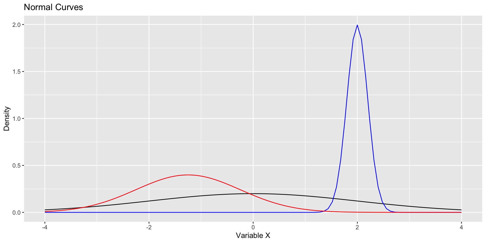
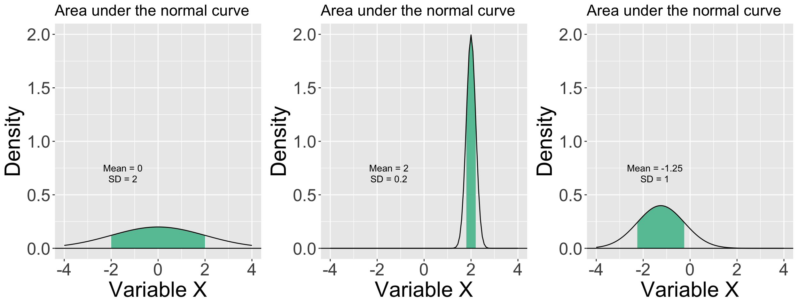

Q2: Distributions are most often described by their…
A. mean and median
B. variance and standard deviation
C. mean and variance
D. median and standard deviation
Assume that the distribution we are describing is not skewed.
Module 1 Quiz!
Q3: I want to calculate a measure of spread in my distribution, so I calculate each score’s deviation from the mean (i.e., x - mean) and then I add those scores together. What do I get?
A. The variance
B. The standard deviation
C. The range
D. Zero
Module 1 Quiz!
Q4: What happens to the mean in a skewed distribution?
Module 1 Quiz!
Q5: Which statistics classes or trainings have you taken in the past?
The Normal Distribution
Characteristics of the normal distribution
The mean and standard deviation are independent.
The distribution is unimodal and symmetric.
The area of under the curve between corresponding locations, in standard deviation units, is the same regardless of \(\mu\) and \(\sigma\).
For example, in a normal distribution, approximately 68% of the area under the curve falls between 1 \(\sigma\) below the mean and 1 \(\sigma\) above mean—for every normal curve (regardless of the value of the mean and standard deviation).
Code
ggplot(data.frame(x =seq(-4, 4)), aes(x)) +stat_function(fun =function(x) dnorm(x, mean =0, sd =2)) +stat_function(fun =function(x) dnorm(x, mean =2, sd = .2), color ="blue") +stat_function(fun =function(x) dnorm(x, mean =-1.25, sd =1), color ="red") +scale_x_continuous("Variable X") +scale_y_continuous("Density") +ggtitle("Normal Curves")

All of these distributions are normal and have an equivalent area (proportion) that falls between a standard deviation below and above their respective means.
Code
p1 =ggplot(data.frame(x =seq(-4, 4)), aes(x)) +stat_function(fun =function(x) dnorm(x, mean =0, sd =2) , xlim =c(0-2, 0+2),geom ="area", fill = colors[1]) +stat_function(fun =function(x) dnorm(x, mean =0, sd =2)) +geom_hline(aes(yintercept =0)) +annotate("text", x =-1.5, y =0.75, label ="Mean = 0") +annotate("text", x =-1.5, y =0.65, label ="SD = 2") +scale_x_continuous("Variable X") +scale_y_continuous("Density", limits =c(0,2))+ggtitle("Area under the normal curve") +theme(text =element_text(size =25), plot.title =element_text(size =18))p2 =ggplot(data.frame(x =seq(-4, 4)), aes(x)) +stat_function(fun =function(x) dnorm(x, mean =2, sd = .2) , xlim =c(2-.2, 2+.2),geom ="area", fill = colors[1]) +stat_function(fun =function(x) dnorm(x, mean =2, sd = .2)) +geom_hline(aes(yintercept =0)) +annotate("text", x =-1.5, y =0.75, label ="Mean = 2") +annotate("text", x =-1.5, y =0.65, label ="SD = 0.2") +scale_x_continuous("Variable X") +scale_y_continuous("Density", limits =c(0,2))+ggtitle("Area under the normal curve")+theme(text =element_text(size =25), plot.title =element_text(size =18))p3 =ggplot(data.frame(x =seq(-4, 4)), aes(x)) +stat_function(fun =function(x) dnorm(x, mean =-1.25, sd =1) , xlim =c(-1.25-1, -1.25+1),geom ="area", fill = colors[1]) +stat_function(fun =function(x) dnorm(x, mean =-1.25, sd =1)) +geom_hline(aes(yintercept =0)) +annotate("text", x =-1.5, y =0.75, label ="Mean = -1.25") +annotate("text", x =-1.5, y =0.65, label ="SD = 1") +scale_x_continuous("Variable X") +scale_y_continuous("Density", limits =c(0,2))+ggtitle("Area under the normal curve")+theme(text =element_text(size =25), plot.title =element_text(size =18))ggarrange(p1, p2, p3, ncol =3)

The Empirical Rule
In a normal distribution:
Approximately 68% of the data falls within one standard deviation of the mean.
Approximately 95% of the data falls within two standard deviations of the mean.
Approximately 99.7% of the data falls within three standard deviations of the mean.
The Empirical Rule
::: notes Here’s an illustration of the empirical rule.
68% - purple green plus purple sums to 95% and all colors together sum to 99.7% You also see here that the distribution is symmetrical, which means that half of the data fall on either side of the mean.
The reason that this is convenient is because if I have a normal distribution, I can look at how many standard deviations a given score is from the mean, and I can say whether it’s rare or common given the distribution. :::
The Standard Normal Distribution
The normal distribution with \(\mu\)=0 and \(\sigma\)=1 is called standard normal.
Variables with quite different means and standard deviations can be standardized so that they can be compared in the same metric (standard deviation units). This allows statements such as “relative to the mean, I am more conscientious (e.g., 2SD from the mean or \(Z=2\)) than I am extraverted (e.g., 1SD from the mean or \(Z=1\)).”
I could not say, however, that I am twice as conscientious as I am extraverted.
A Quick Refresher: Z-Scores
A Z-Score is a numerical measurement that describes a value’s relationship to the mean of a group of values and is measured in terms of standard deviation units.
The formula used to calculate a z-score is: \(z = \frac{x - \mu}{\sigma}\)
How is this all useful?
Given any score, we can calculate the probability of getting a value greater than that z-score. (Or less than that z-score.)
How likely is it that we would find a score this extreme (or more extreme) in this distribution?
Example
What’s the probability of getting a z-score of 1 or greater?
::: notes
We would sum up the percentages greater than 1, to get 13.6+2.1+0.01 = 15.71% Only about 16% of the data is greater than 1 SD from the mean. So, this would be a p-value of .16 :::
Example
What’s the probability of getting a z-score of 3 or greater?
All continuous distributions can be standardized, but if they are not normal to begin with, standardization will not make them so. Standardization does not alter distribution shape. |
[PLUS, OUR SAMPLES SOMETIMES AREN’T NORMALLY DISTRIBUTED – FORTUANTELY, WE DON’T ACTUALLY CARE ABOUT THE SAMPLES!] |
So, how can we implement these useful properties of the normal distribution? |
Sampling distributions are normal
One of the most important discoveries in statistics is that the sampling distributions of many statistics are approximately normal even when the sample (and population) distributions are not.
The sampling distribution of a statistic is the probability distribution that specifies probabilities for the possible values that the statistic can take.
For example, the mean of a random sample will not precisely equal the population mean. But, how far off will it be? And what distribution shape will these possible sample mean values have?
The error represented by how far off a sample mean is from the population mean is called sampling error.
MAYBE ADD STANDARD ERROR HERE?
Central limit theorem
According to the central limit theorem, as sample size increases, the sampling distribution of the mean approaches normality, even when the data upon which the mean is based are not normally distributed.
The sample size necessary to be “approximately normal” depends on the nature of the underlying data. The less normal it is, the larger the sample size necessary in order for the sampling distribution of the means to become normal.
“Around sample size of 30” is a common rule of thumb.
- Note, however, that this rule of thumb is sufficiently only to assume that the sampling distribution is normal. This makes no assumptions about statistical power.
Next Week!
Don’t forget to complete Journal 1 and submit your homework by 12pm on Tuesday (January 21st)!

 ::: notes Here’s an illustration of the empirical rule.
::: notes Here’s an illustration of the empirical rule. ::: notes
::: notes